Tjenester
Alt innen innramming
Et lite verksted med stor faglig tyngde. Her er noe av det vi kan hjelpe deg med.
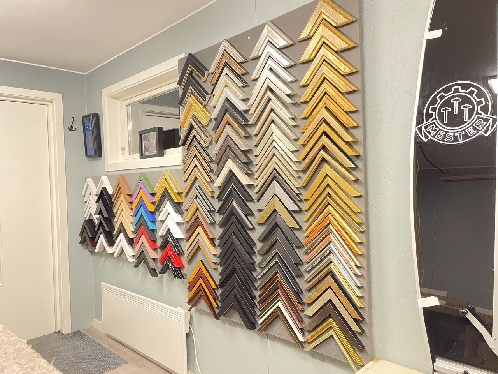
Rammer
Rammelister finnes i et fantastisk utvalg når det gjelder bredde, utforming, profil, ornamenter og farger. I tillegg til ytterrammer har vi også et bredt utvalg passepartoutlister – en smalere list som festes i innerkanten av passepartouten og danner en fin overgang mellom bildet og passepartouten.
En gylden regel er at rammens stil og farge skal utfylle og fremheve bildet – ikke trekke oppmerksomheten vekk fra det. Har du bilder som ble rammet inn før 1980, bør du vurdere ny innramming med syrefrie materialer.
Kataloger fra våre største leverandører: Interart Larson-Juhl
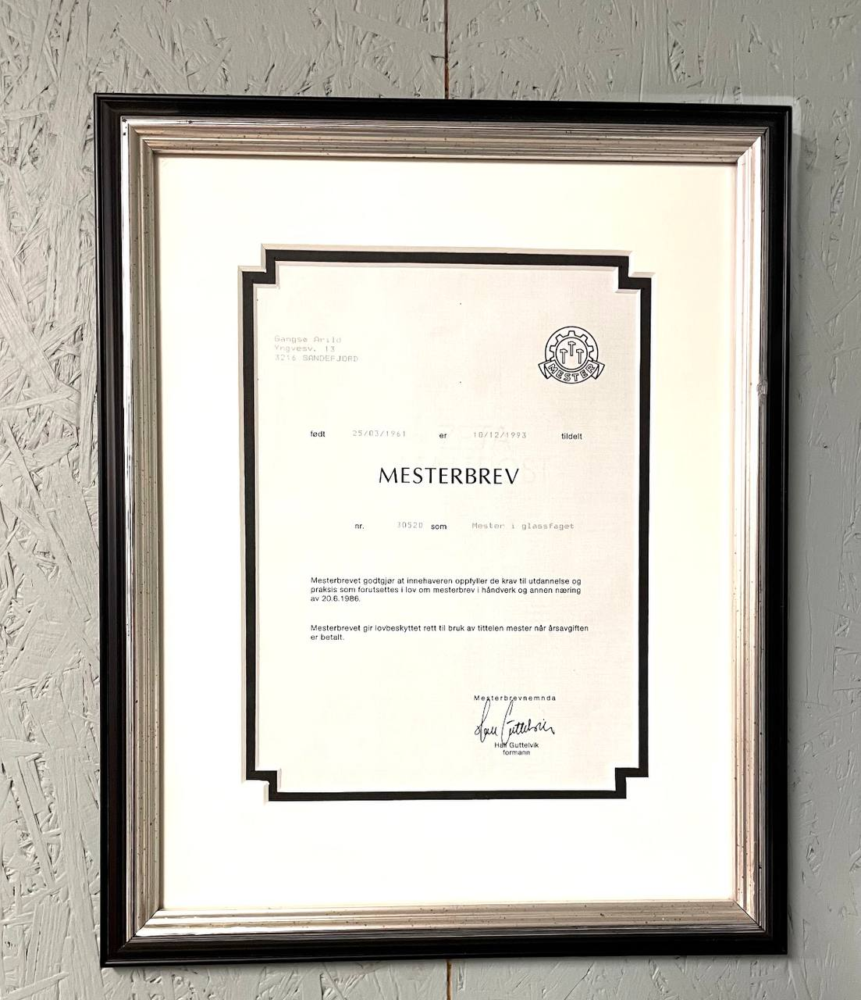
Passepartout
Passepartout skaper et visuelt skille mellom bildet og rammen. Den er skråskåret for å unngå skarpe skygger og leder blikket inn i bildet. Farget passepartout fremhever detaljer, og er ofte fint i kombinasjon med hvit eller offwhite.
Det er nesten ingen grense for hvor mange passepartoutlag man kan ha. Flere lag gir en trappetrinns-effekt som virkelig fremhever motivet. Vi bruker kun syrefri passepartout fra Crescent.
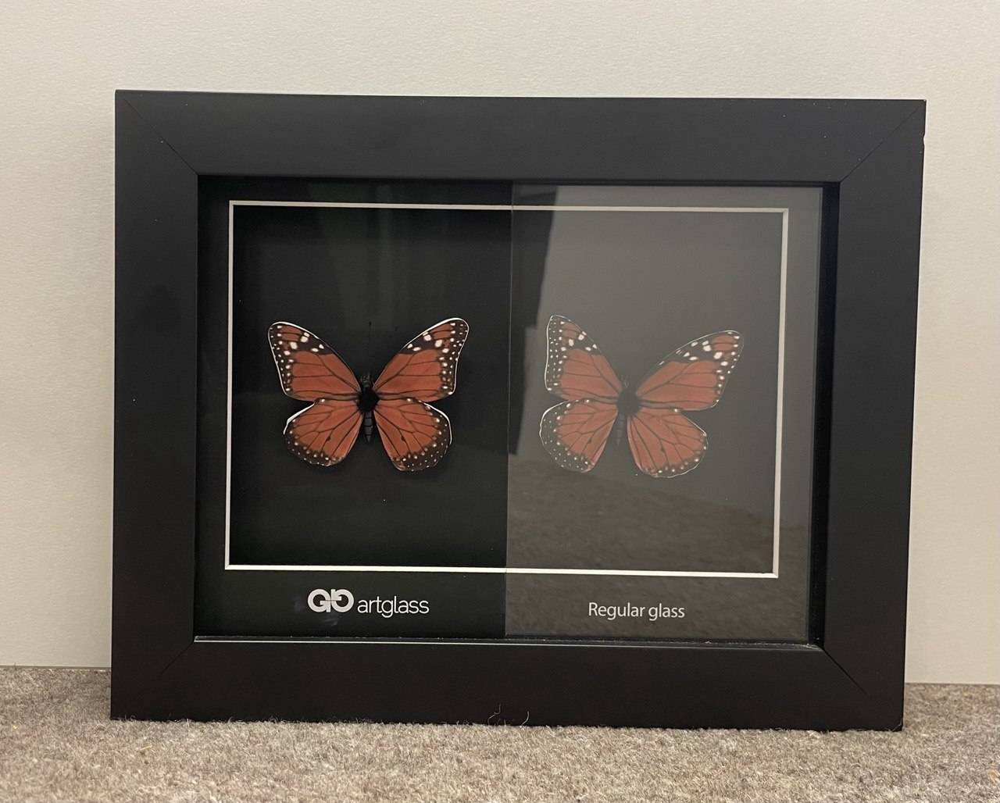
Glass
Vi har markedets beste innrammingsglass fra Groglass. Som standard bruker vi UV-glass som stopper 99 % av UV-strålingen og bevarer bildene mot falming.
Vi fører også glass med 70 % UV-beskyttelse og 70 % antirefleks, og har museumsglass på lager. Bildet til venstre viser forskjellen mellom artglass og vanlig glass.
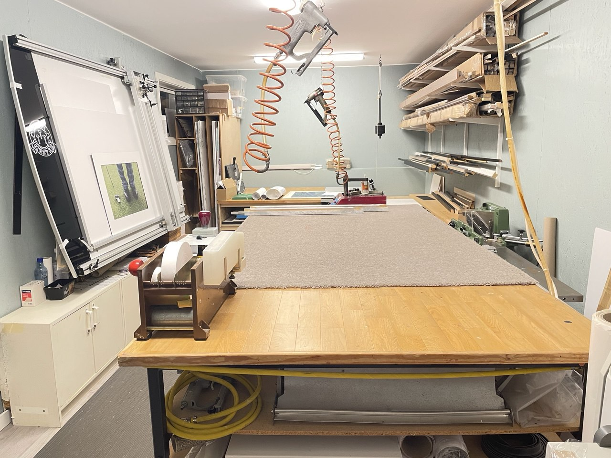
Blindrammer og oppstrekk
Vi strekker opp lerret i alle størrelser, med forskjellige typer blindrammer tilpasset bildets størrelse.
Broderioppstrekk er min spesialitet. Alle typer broderi og garn er mulig, og vi kan også rense broderiet før oppstrekk og innramming.
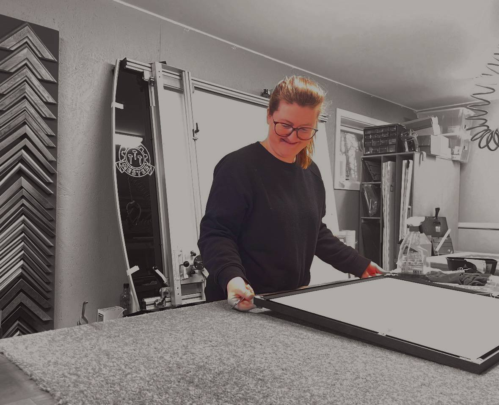
Laminering
Laminering er en plastfolie limt til bildet, oftest på en plate. Innbaking er plastfolie på begge sider, slik at bildet blir vanntett – velegnet til sjøkart, bygningstegninger og oppslag som kan bli utsatt for fuktighet.
Vi laminerer foto, kart, tegninger og lignende, og kleber på alle typer plater som kapa, MDF og stålplater.
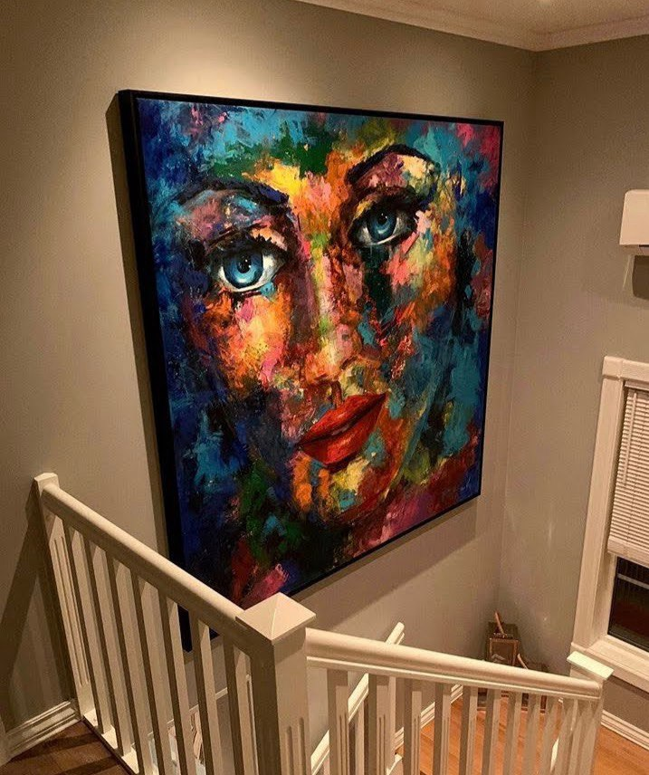
Bildeoppheng
Vil du slippe hull i veggen? Da monterer vi opphenget oppe ved taklisten, med en nesten usynlig nylontråd ned til bildet. Vi har selvfølgelig også vanlige bildekroker for vegg.
Inspirasjon: artiteq.com
Galleri
Innramming av gjenstander
Vi rammer inn alt du måtte ønske. Vi har rammet inn dåpskjoler, sko, melkekartong, sølvtøy, sykkeldrev, skiftenøkkel, mobiltelefon, kniver, dirigentstav – ja, alt du kan tenke deg.
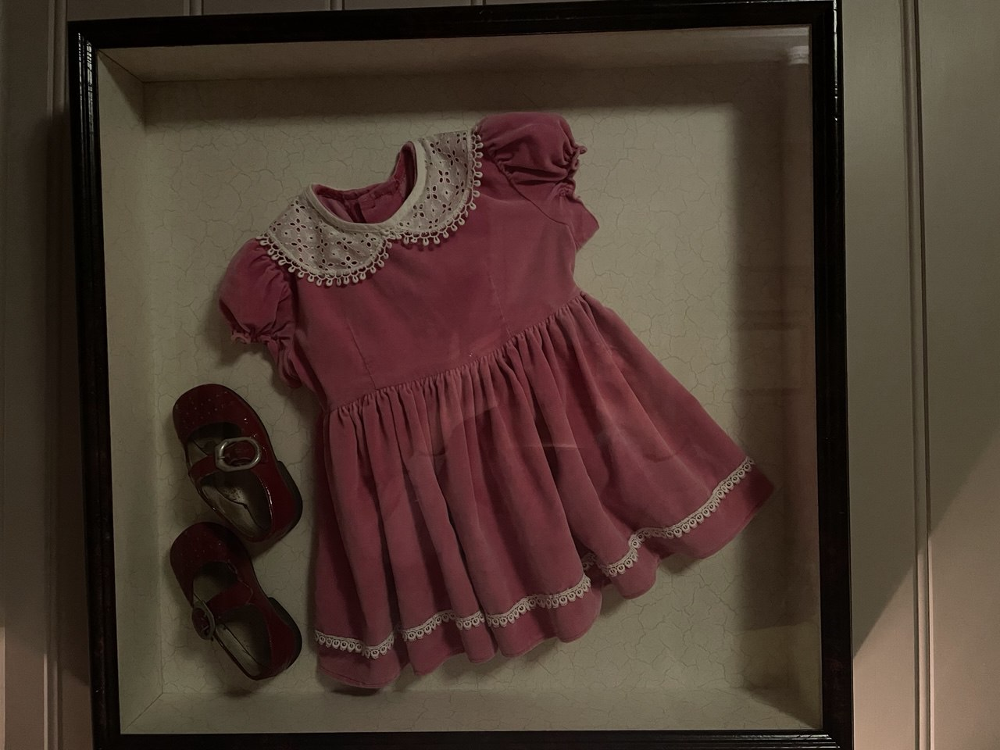
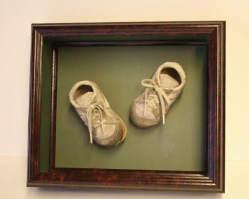
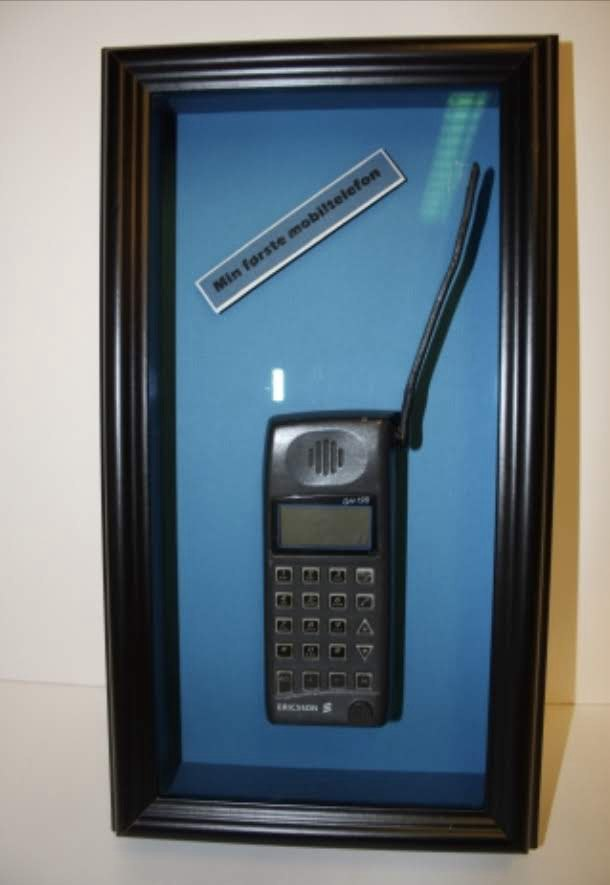
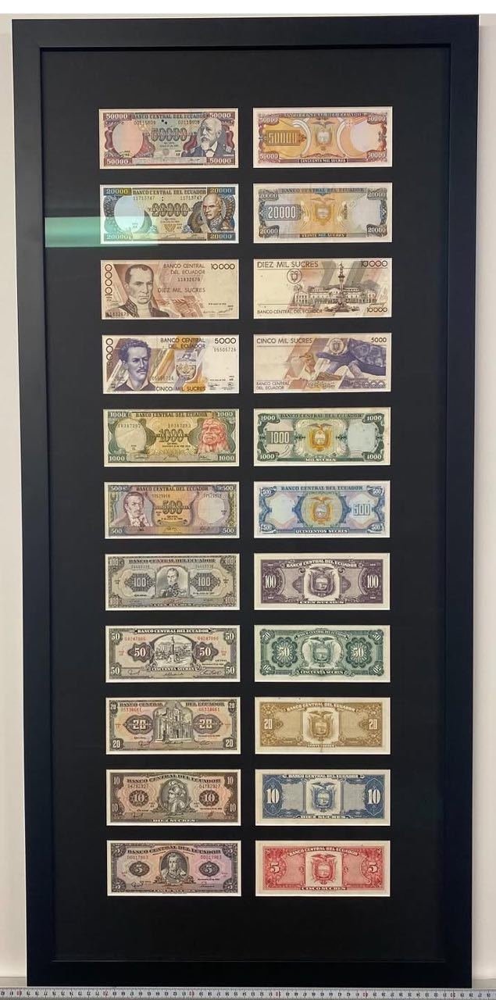
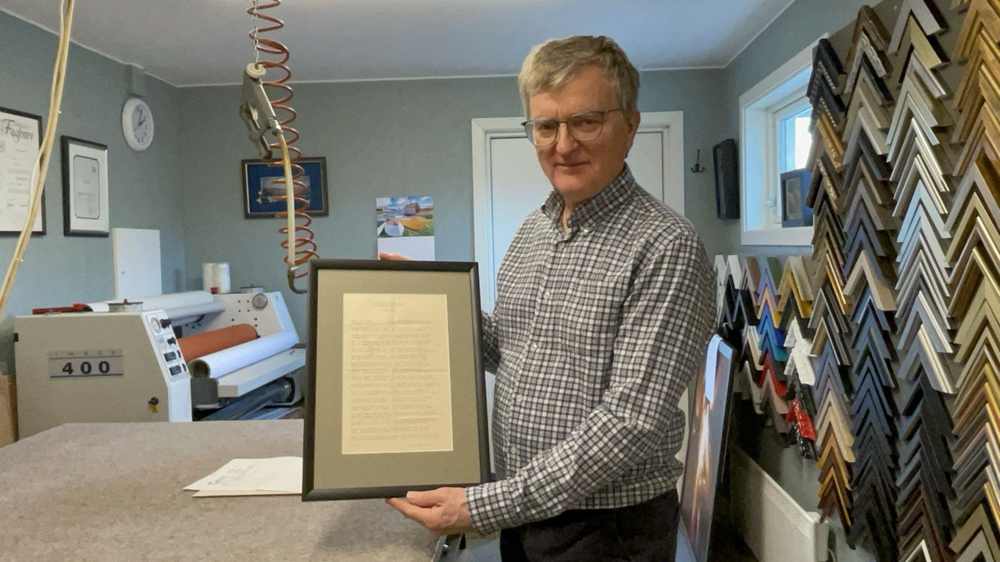
Om oss
Gangsø Rammer
Firmaet ble etablert i 1967 av min far, Peter Gangsø. Vi har alltid holdt til i Sandefjord, en tid også i Tønsberg. Inntil 2007 bestod Gangsø Rammer av både forretning og rammeverksted. Forretningsdelen ble solgt i 2007, men jeg beholdt rammeverkstedet.
Siden da har jeg, Arild Gangsø, drevet rammeverkstedet videre. Jeg har vært ansatt hos Gangsø Rammer siden 1977 og ble mester i faget i 1991. Gangsø Rammer er én av få bedrifter som er mester i glassfaget med innramming som spesialområde.
I 2023 flyttet vi fra Breidablikk til Feen i Stokke, der vi har bygget nytt verksted. Velkommen!
Kontakt
Ta kontakt for en avtale
Ring eller meld for en avtale, så finner vi ut av det sammen.